QuickStart
Initial Setup
This manual requires a basic understanding of the SPT-Library functions. To utilize the SPT_Kinematic library, the Beckhoff Advanced Motion Package needs to be installed. The package is included in the below linked installer for Advanced Motion.
Advanced Motion Package Download
Note
Kinematic transformation available up to L3. L4 which contains more than 4 Axis is available via your Beckhoff Sales contact upon request and Project.
Step By Step setup
1. Add the required Libraries to an SPT base project
After the installation of the Advanced Motion Package, open an empty base project with the SPT framework. Add the SPT Kinematics library along with the Tc3_McCoordinatedMotion and Tc2_NcKinematicTransformation libraries to the project.
IF the FB_ComponentKinematicMotionCamming is used, add Tc2_MC2_Camming.
2. Add a desired Kinematic to the project
Add an NC-Channel for the Kinematic transformation to your project.
Note
The following pictures function as an example of how to implement a specific Kinematic, adjustment is needed if a different Kinematic is desired.
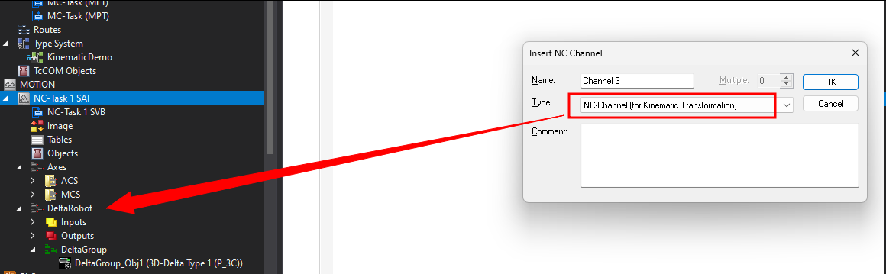
Add the desired Kinematic to the new NC-Channel that was added to your project. 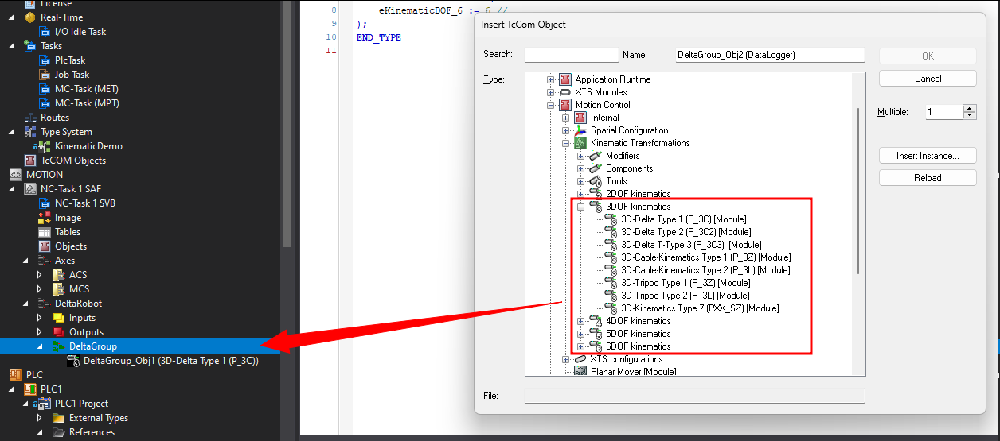
3. Insert a Coordinated Motion Group into your project (only if Advanced Motion is used -> FB_ComponentKinematicMotionAmp)
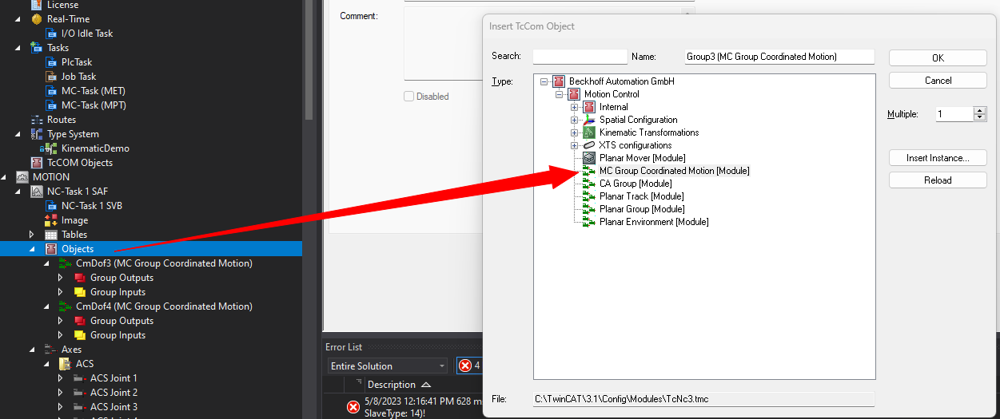
Verify the Coordinated Motion Group configuration matches the configuration of the Kinematic! 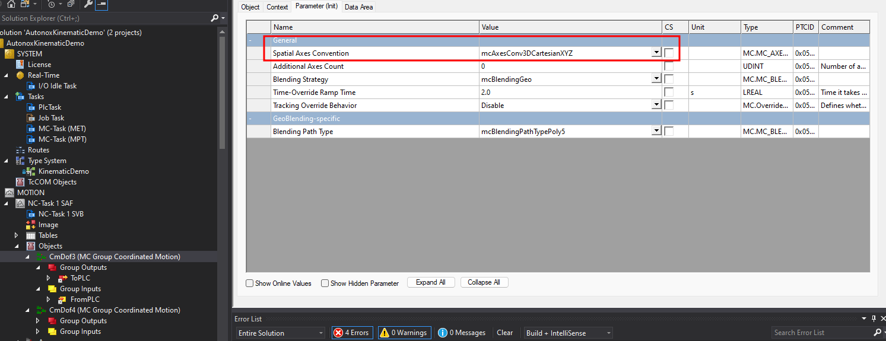
4. Add the required NC Axes to the project
Add the appropriate number of ACS(Physical axes) and MCS(virtual axes) to your motion project. Organization in folders is recommended for the ACS and MCS axes.
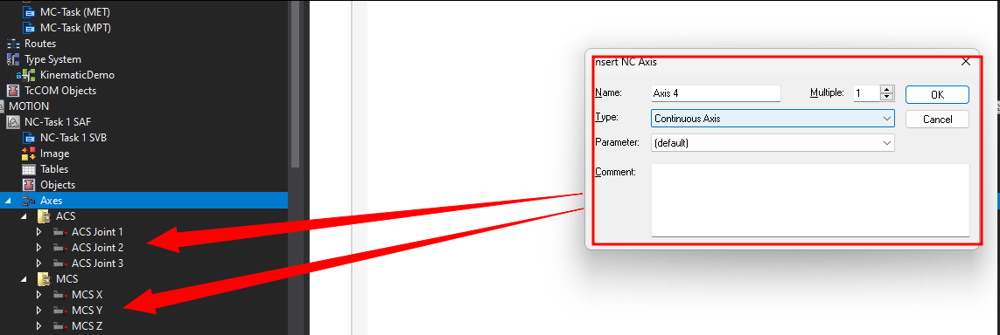
Set this functions to True on all Axes:
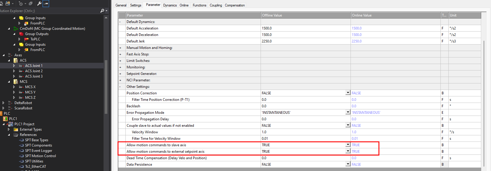
5. Create a Component of FB_ComponentKinematicMotionAmp or one of the other Kinematic FBs available. E.g FB_ComponentKinematicMotionCamming
Create the component instance in the desired EM or Machine of the SPT Framework.
Create an instance of FB_KinematicAxisRef to define the desired Degrees of Freedom. E.g. 3D-Delta Type 1 (P_3C) = E_KinematicDOF.eKinematicDOF_3
This object will be passed to the FB_ComponentKinematicMotionAmp or FB_ComponentKinematicMotionCamming via parameter iAxisRef.
Add the OID from the Kinematic object to the PLC Instance, also add a Tool OID if a Tool is used:

6. Define the Cartesian Coordinate System (only if FB_ComponentKinematicMotionAmp is used)
When using the Advanced Motion Package, the identification of the axes in the Cartesian system needs to be defined.
The parameters cmIdentAxis1, cmIdentAxis2, and cmIdentAxis3 of 'FB_ComponentKinematicMotionAmp' are assigned the constants MCS_X, MCS_Y, and MCS_Z respectively. These constants are defined in the library Tc3_McCoordinatedMotion.
FB_KinematicAxisRef creates an array of AXIS_REF objects in the PLC instance to link the MCS and ACS axes. In the MCS array, McsAxis[1] corresponds to the Cartesian X axis, McsAxis[2] is the Y axis, and McsAxis[3] is the Z axis.
You can find more to this definition here under IDENT_IN_GROUP_REF.
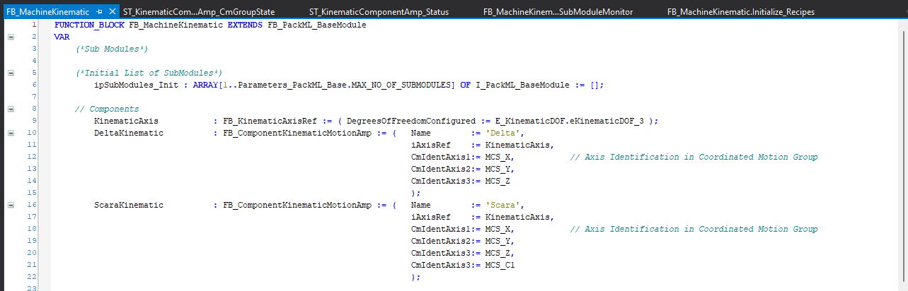
7. Camming - Coordinated Joint and Cartesian Movements
This FB FB_ComponentKinematicMotionCamming can be used for all Kinematics offered by Beckhoff Kinematic Package with the SPT Framework. DOF=2 up to DOF=6.
Declaration example for FB_ComponentKinematicMotionCamming:
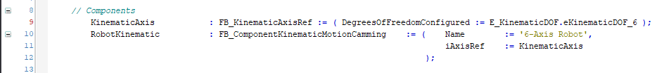
For Camming to ACS and MCS, each a Virtual Master needs to be added and linked to FB_ComponentKinematicMotionCamming.
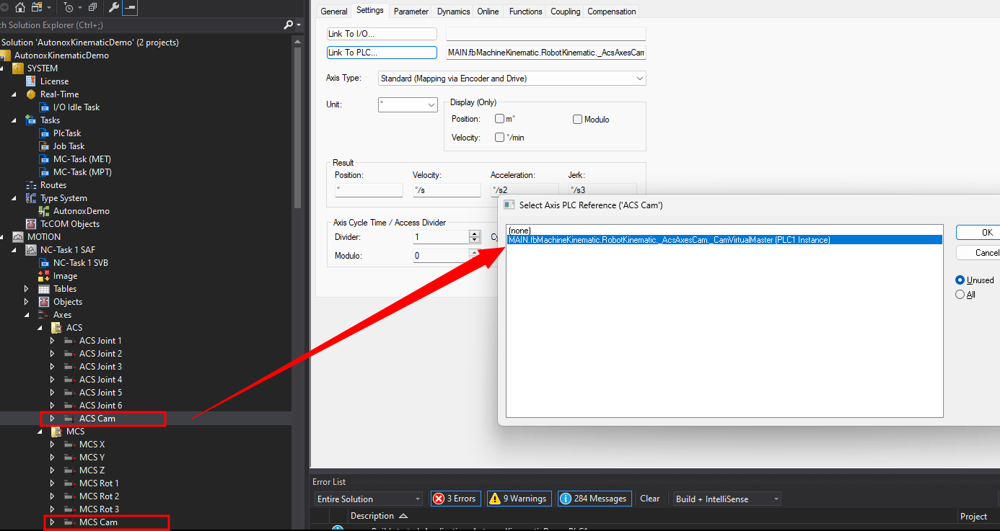
8. Link NC axes and Kinematic objects to the PLC Instance Objects created by FB_ComponentKinematicMotionAmp or FB_ComponentKinematicMotionCamming.
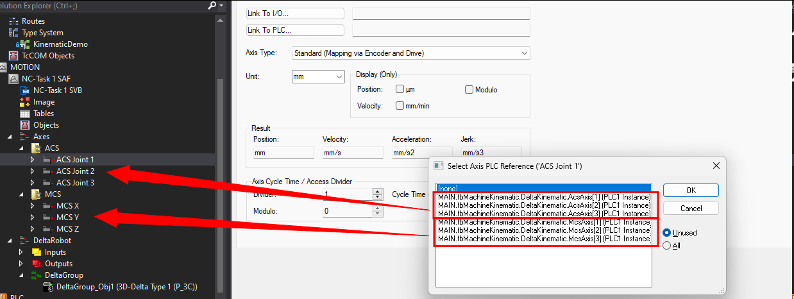 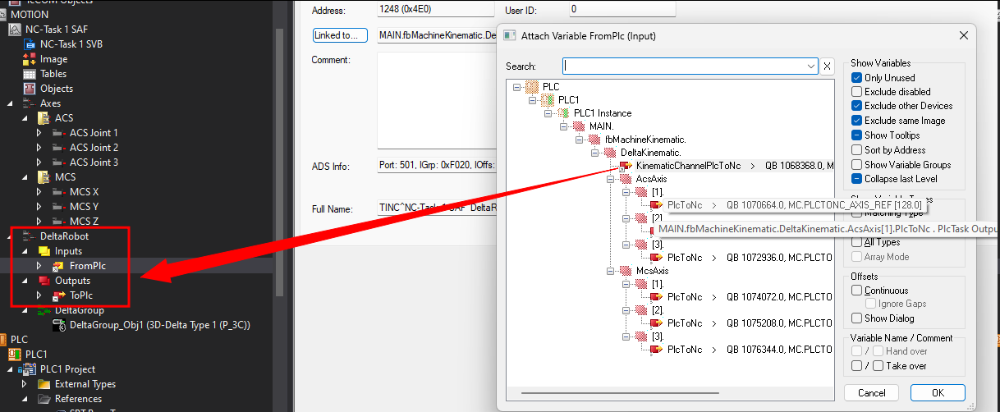 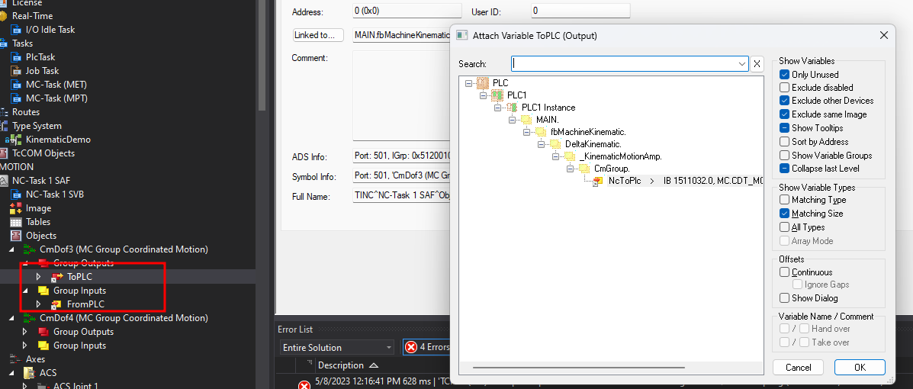
9. Add Connections to SPT-HMI Template
Example HMIs are in the SPT_BASE_HMI to find.
Use the following Templates for specific use:
KinematicAmp_Monitor: Used for FB_ComponentKinematicMotionAmp. Includes Status Overview, Jogging, Basic Point Teaching and AMP point movements. Setup for up to DOF=4
Kinematic_Monitor: Used for FB_ComponentKinematicMotionCamming. Includes Status Overview, Jogging, Basic Point Teaching and Coordinated movements via Camming (ACS and MCS). Setup for up to DOF=6.
Kinematic_Monitor_Navigation: Monitor for above named components in main overview page.
The HMI examples allow basic full control over the Kinematic Objects. Modification for specific applications is encouraged.
Custom HMI
The final Hmi Structures have pre-held variables for user implementations. By overloading HMICommunication(); in an extension you can set KinematicComponentCam_HMI.Config.CustomOverride to True and override all functions available in KinematicComponentCam_HMI or KinematicComponentAmp_HMI. Use KinematicComponentCam_HMI.Config.CustomCommand for all you custom commands.
Example HMI
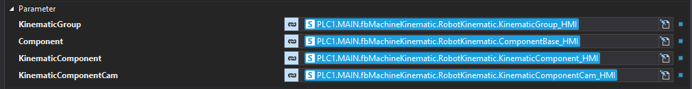 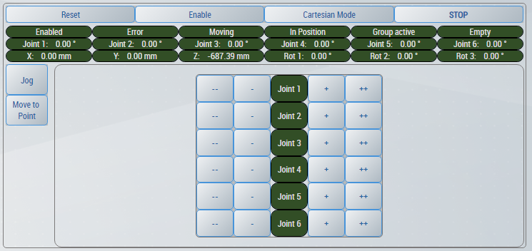
Congratulations! You can now Enable and Jog your Kinematic via the Template HMI locally on your PC.